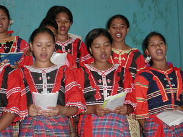

elin 
/ʔɔlin/
v_rt.
“all”
conj.
all
Wrd.Gloss: all
Eng. all
Online dict status: -
Usage level: B
adj.
(elin-elin, rdpRT-) all together
Ka igpasabut te seini ne lalag iyan ka peg-amin-amin te sabeka ne pamilya te eggimu te minsan nekey ne himu. Ka pegsabeka wey ke nenekeg-iling naa.
Elin-elin e egmamasku ka me batè wey ka me amey wey iney ran diyè te Dabaw.
Parents and childrens begging (money and used clothes etc) all together in Davao.
Eng. all together
Online dict status: -
Usage level: M
adj.
(neelin, nA-) uniform
Neelin sikandan ne migpanasaluub te me Matigsalug ne kumbalè.
They were uniformed with a Matigsalug dresses.
Eng. uniformed
Online dict status: -
Usage level: M
1.
v.
for a person or animal (eg-elin, mig-elin, in-elin, agent, eg><ø-) to eat a single kind of food or viand (eg-elinen, patient, eg><en-) without something (viand, food) (ig-elin, instrument, ig><ø-)
Eg-elin a te serè su warè ma hemey ney.
I will eat only viand because we don't have rice.
Eg-elinen kud e ka serè su warè behas ney.
I'll just eat viand only because we dont have rice.
Ig-elin ku seini se me batu ne memabbatek.
I will group together these colorful stones.
Eng. eating without viand
Ceb. lonlon
Online dict status: -
Usage level: M
Updated by: RJH,AAA,TME,QDL,NJK
Last updated: 13/Oct/2009
"elin" in text "Prophecy About Future"
"elin" in text "Te senge kaapunan, egpanumbaley si Pidru diye te senge baley"
"neelin" in healthbook "Ka an-anayan ne peg-uyamu ni Lolita te mig-anak"
This page last updated: 19/May/2012
Copyright © 2009-2010, Matigsalug Language Christian Association, Inc